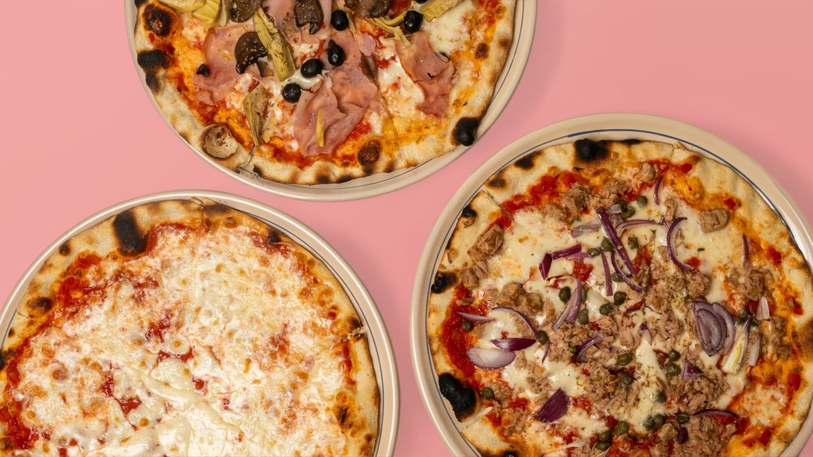
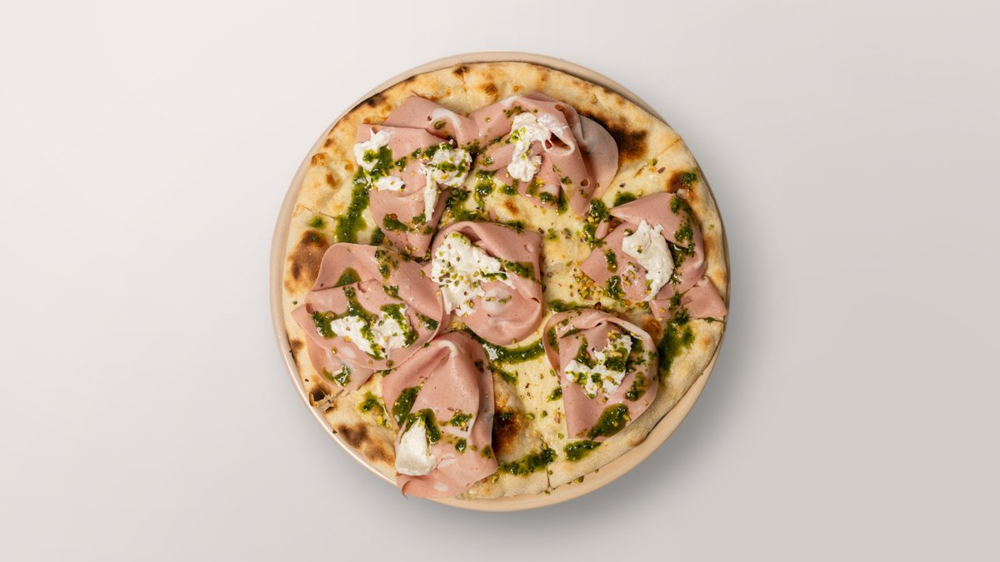
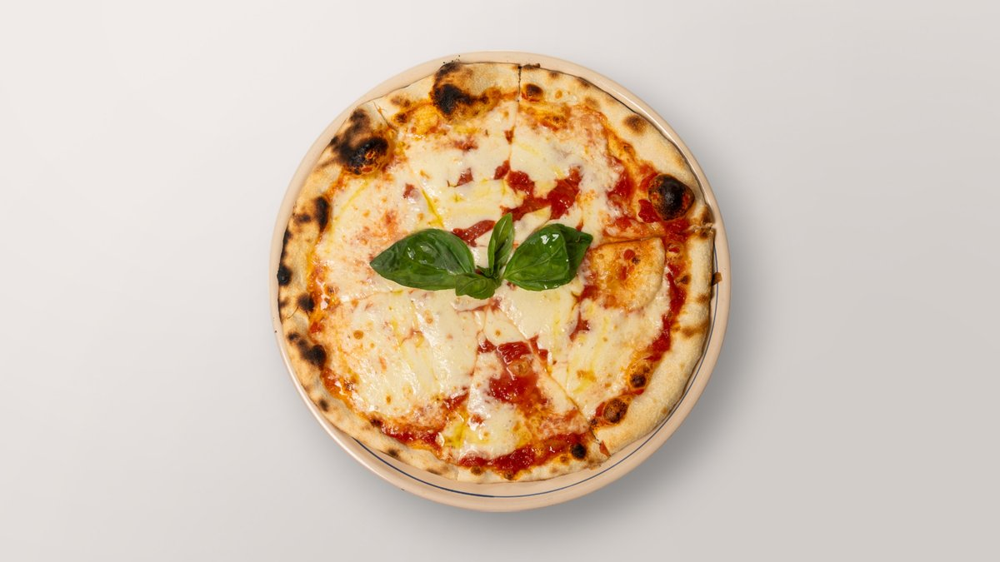

Rosticceria pugliese · Ville Haute
Le goût du
Salento
La Puglia, au cœur de la Ville Haute — pucce, focacce & pizza au four à bois.

a legna le soir
La signature
La puccia
Le pain garni du Salento : une mie dorée, croustillante au feu, remplie à la commande. C'est le geste emblématique de la Puglia — et notre différence face à la pizzeria ordinaire.

La carte
Sélection — prix & disponibilités à confirmer avec l'établissement (sources : plateformes de livraison).
Pucce
Pain garni du Salento
Focacce
Moelleuses, au fourPizze
Au four à bois · le soire Pistacchio ★€23,50

Pizze speciali
Les signatures de la maison
Salades & plats
Fraîcheur & traditionDolci
Pasticceria salentinaBoissons
Bières artisanales & vinsAl forno a legna
Le soir, on allume
le four à bois
La journée, c'est le comptoir : pucce et focacce à emporter, vite et bien. À la tombée du jour, la salle change de rythme — le four à bois s'allume et les pizzas sortent, bord soufflé et braisé.
Pizza au four · 17:45–21:00 · à confirmer

Dal tacco d'Italia
Du talon de la botte
à la Grand-Rue
Le Salento, c'est l'extrême sud de la Puglia — le talon de l'Italie, entre deux mers, où la cuisine est faite de pain, d'huile d'olive et de générosité. Nous en avons rapporté les gestes : la puccia, la focaccia, le pasticciotto leccese.
Une petite salle, quelques tables, un comptoir animé au déjeuner : Il Salento apporte cette table du Sud au cœur de la Ville Haute.
Récemment ouvert · aux fourneaux : « Mathieu » (à confirmer) · @salento_luxembourg
Nous trouver
Horaires
Adresse & contact
Il SalentoGrand-Rue · Ville Haute
L-1661 Luxembourg
+352 26 77 15 00 N° de rue & tél. à confirmer